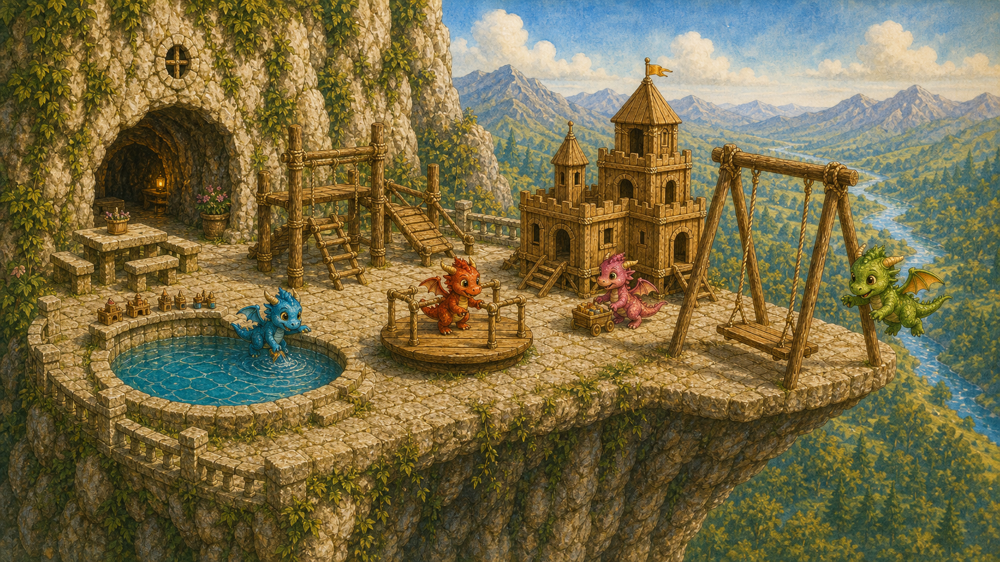
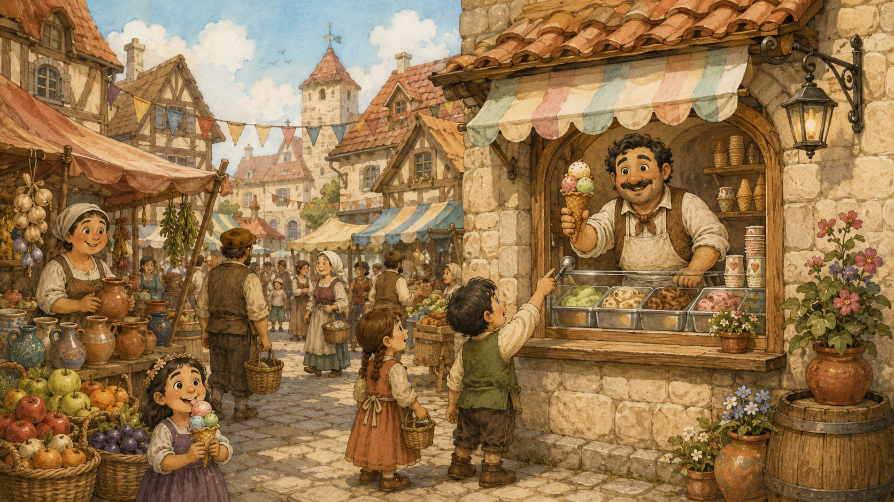

Domov dráčikov
Dračia hora a terasa
Jaskyňa, poklad, kamenná terasa, ihrisko a všetky nápady, pri ktorých mama dračica radšej otvorí aspoň jedno oko.
horaterasapoklad
Pracovné mapky
Miesta zo sveta dráčikov. Nadýchnite sa atmosféry rozprávkového sveta.

Domov dráčikov
Jaskyňa, poklad, kamenná terasa, ihrisko a všetky nápady, pri ktorých mama dračica radšej otvorí aspoň jedno oko.

Ladin svet
Palác, záhrada, labyrint, jazierko so zlatou rybkou a palác, z ktorého sa Lada pozerá smerom k dobrodružstvu.

Za hradbami
Hustejšia časť kráľovstva, kde cesta nemusí ísť rovno, stromy si pamätajú viac než dospelí a čím si hlbšie tým je tam menej bezpečno.

Mestské centrum
Ulice, trh, dielne, klebety a najdôležitejší predajný pult v celom meste.